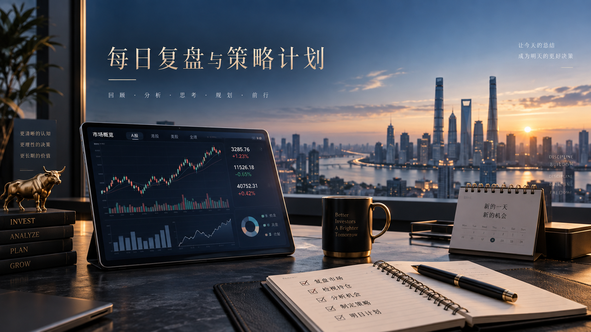

02 / PERSONAL FINANCE
投资理财
用长期视角，思考财富与生活。
记录关于个人财务、风险意识与长期决策的思考。
个人财务风险意识长期思考
每日财经
21 期报告 DAILY FINANCE / 每日 08:00
DAILY FINANCE / 每日 08:00用一份日报，看清市场脉络。 ↗
财经事件、全球市场表现、板块机会与风险，按日期持续归档。
进入每日财经 →最新一期：2026-09-24 · 每日市场盘前策略日报｜9月24日：科技链分化，个股名单按最新资金重筛
30 秒速读
🟡 Neutral。 美债收益率回到约5.11%，美股科技与港股科技走弱；A股PCB内部沪电股份获资金流入、科华数据上涨，超声电子高换手但盈利承压。本期不沿用北方华创、长电科技、亨通光电旧名单；仅沪电、科华满足条件观察，超声电子不追高。
成长记录
1 篇记录
GROWTH JOURNAL / 投资复盘记录每一次决策，让投资认知持续生长。 ↗
每日把图表、市场、持仓、操作反思与次日计划合并成一篇记录，按日期持续归档。
进入成长记录 →